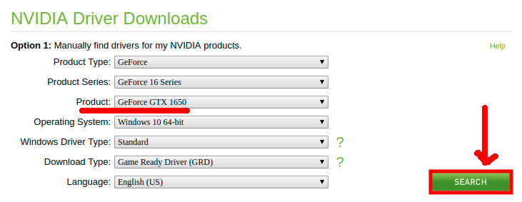
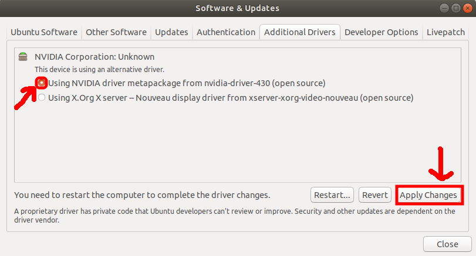

Installing NVIDIA Video Graphics Driver
Pre-requisites
- Identify what graphics card product you have.
- Make sure to have both monitors connected on the video ports of the graphics card.
Steps
Go to this website https://www.nvidia.com/Download/index.aspx?lang=en-us and fill-up the form like shown below but based on your video graphics product and click Search. 
You will see the version number of the driver in the next screen and take note of that one. In my case it is 430.86.
Open terminal via application menu or you can use the shortcut Ctrl+Alt+T.
When it opens, run the command:
sudo add-apt-repository ppa:graphics-drivers/ppa
sudo apt update
After that, Launch Software & Updates utility and navigate to Addtional Drivers tab. Click on the version based on Step 2, then click Apply Changes. 
In addition, if the driver does not install after clicking Apply Changes, try running command in terminal:
sudo apt install nvidia-driver-430 nvidia-settings
Once successfully installed, restart your PC. Finally, verify it if you can now use dual monitor setup and if you can now search for NVIDIA Settings in your application menu.
Next Step
References
http://ubuntuhandbook.org/index.php/2019/04/nvidia-430-09-gtx-1650-support/
Version
Note: To monitor the update of this document, editors must log the date and its update short description. Thanks!
- v0.1 - 06/26/19 - Rumel Amora Docdoc - Initial steps for Installing the NVIDIA Video Graphics Card